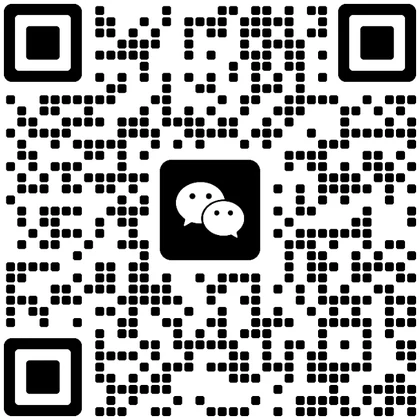

关于
一段自我介绍，和一条正在走的路。
我是无误差，大一。现在主要在学 C，顺带把 AI 的一些基础概念过一遍。长期想做的方向是边缘 AI——让模型跑在没有屏幕、没有散热风扇的小设备上。
我还没做出什么拿得出手的东西，所以这个站现在的样子，基本就是我的真实进度。它会一直改，改的过程也会写进日志。
名字是个自我要求，不是自我评价：无误差，说出来容易，做到很难。
- 现在C 语言 · 数据结构基础
- 接下来嵌入式（单片机、外设、功耗）
- 长期边缘 AI（把模型塞进小设备）
个人记录
- 10 公里50:00，配速 5'00" · 2026-04
- 卧推50 kg（含杆）· 2026-08
时间线
- 2026-09入学，写下第一个 hello world
- 2026-09开始按周练 C，建了 study.c（然后一直空着）
- 2026-10开始学前端，把这个站从零写出来
跑步：在记里程和配速，用数据看自己有没有变快。
健身：在练力量和体态，目标是把动作做标准，不是把照片修标准。
游戏：更在意它为什么好玩、为什么会掉帧。
现在now
- 身份大一 · 前端入门 · 同时啃 C
- 在学HTML / CSS / 一点点 JS；C 的指针和内存；边缘 AI 的基础概念
- 在练跑步记配速、健身房记重量、时间管理——过程都写在日志里
- 想做的一个能离线跑、脱离电脑也有用的小设备
- 不太行写点东西要来回改好几遍；早起这件事一直没成功
联系contact
微信联系

二维码还没放进来。把图片存成assets/wechat-qr.webp 就会显示。
加了说一声「来自个人站」，我就知道你是从哪来的。
要聊技术、组队、或者问「你那个 study.c 到底写了啥」，都可以直接发邮件。回得慢，但会回。